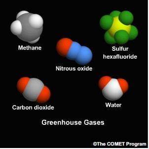
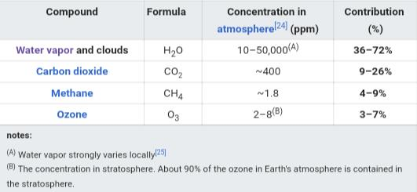

Greenhouse Gases (GHG).
Gases integral to the atmosphere, of natural and anthropogenic origin, that absorb and emit radiation in certain wavelengths of the infrared radiation spectrum emitted by the Earth's surface, the atmosphere, and the clouds. This property causes the greenhouse effect. Water vapor (H2O), carbon dioxide (CO2), nitrous oxide (N2O), methane (CH4), and ozone (O3) are the main greenhouse gases in the Earth's atmosphere. There is also a series of totally man-made greenhouse gases in the atmosphere, such as halocarbons and other substances containing chlorine and bromide, which are covered by the Montreal Protocol. In addition to CO2, N2O, and CH4, the Kiyoto Protocol addresses other greenhouse gases, such as sulfur hexafluoride (SF6), hydrofluorocarbons (HFCs), and perfluorocarbons (PFCs).
GHG molecules have the ability to absorb and re-emit long-wave radiation (this is the infrared radiation, which is eminently thermal) that come from the sun and the one that reflects the surface of the Earth into space, controlling the flow of natural energy through the climate system. The climate must in some way adjust to the increases in GHG concentrations, which generates an increase in infrared radiation that is absorbed by GHGs in the lower layer of the atmosphere (the troposphere), in order to maintain the energy balance Of the same. This adjustment will generate a climate change that will manifest itself in an increase in global temperature (referred to as global warming) that will generate an increase in sea level, changes in precipitation regimes and in the frequency and intensity of extreme weather events ( such as storms, hurricanes, El Niño and La Niña phenomena), and a variety of impacts

